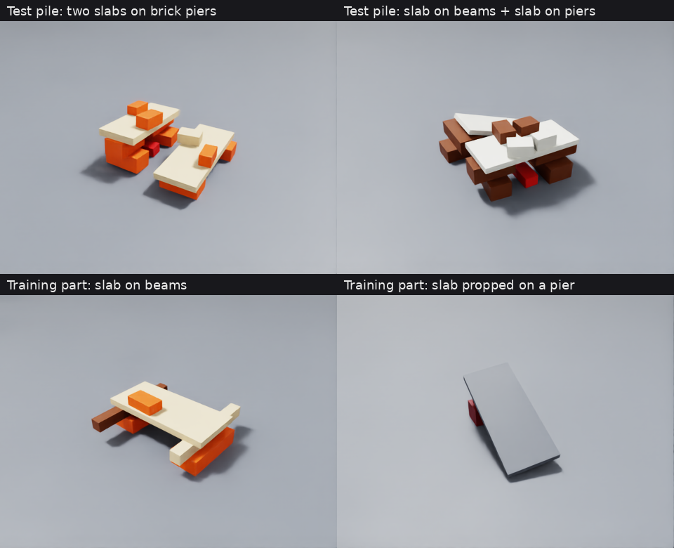

The scene
A rescue robot must clear rubble without bringing the pile down on a trapped person. It sees each piece's shape and position, but not which pieces are secretly heavy or pinned. Every result below comes from held-out piles simulated in PhysX (NVIDIA Isaac Sim), which serves as the ground truth.

Four questions, one learned simulator
The learned simulator predicts how every piece moves. The robot uses it to answer four kinds of question.
Will this pull bring the pile down?
Left to right in each clip: PhysX, regression, flow matching. The learned simulators here are told the hidden masses. The robot's own estimate, made without them, is in each caption.
Is this stuck piece heavy, or pinned?
A short test pull. The robot compares how far the piece moved with what the simulator predicts for each guess about the hidden mass or pin.
The pile starts to slide. Brace, or let go?
One moment, two interventions, both simulated in PhysX from the same state.
What if it had pulled another piece instead?
After seeing what one pull did, the robot keeps only the hidden masses and pins that explain it, then predicts a different pull from the same start. Its answers are in the chart below.
How often the robot decides like the physics engine
Share of answers that match PhysX on 204 held-out piles (2,543 pieces). The robot does not know the hidden masses or pins.
Table
| Question | Regression | Flow matching | Most common answer |
|---|
Fewer attempts, no collapse
The robot tries to free one piece, pulling the piece it is most sure is safe first. Test pulls are its backward reasoning: they tell heavy from pinned before it commits.
Table
| Robot | Piles brought down | Pulls per freed piece |
|---|
Every learned simulator, side by side
The same held-out pulls predicted by each model, next to PhysX. Columns: PhysX, regression, flow matching, block diffusion. The models are told the hidden masses here.
Where it still fails
Pinned pieces are the weak spot: when nothing moves under the strongest test pull, the robot says pinned only 62% of the time.
Setup
- Ground truth. PhysX in NVIDIA Isaac Sim, run with the true hidden masses and pins.
- What the robot is told. Every piece's shape, size and position, and a mass guessed from its look. Not which pieces are heavier or pinned.
- Test piles. Two structures over a red figure with loose debris on top. Some pieces are 3 to 6 times heavier than they look, and about a third of the piles have one pinned slab or beam. None is used for training.
- Uncertainty. The robot draws 12 guesses about the hidden masses and pins and asks the simulator 4 times for each. The share of predictions in which the pile comes down is its stated chance.
- Test pulls. Short pulls, gentle then firm then strong, until the piece moves 5 cm.